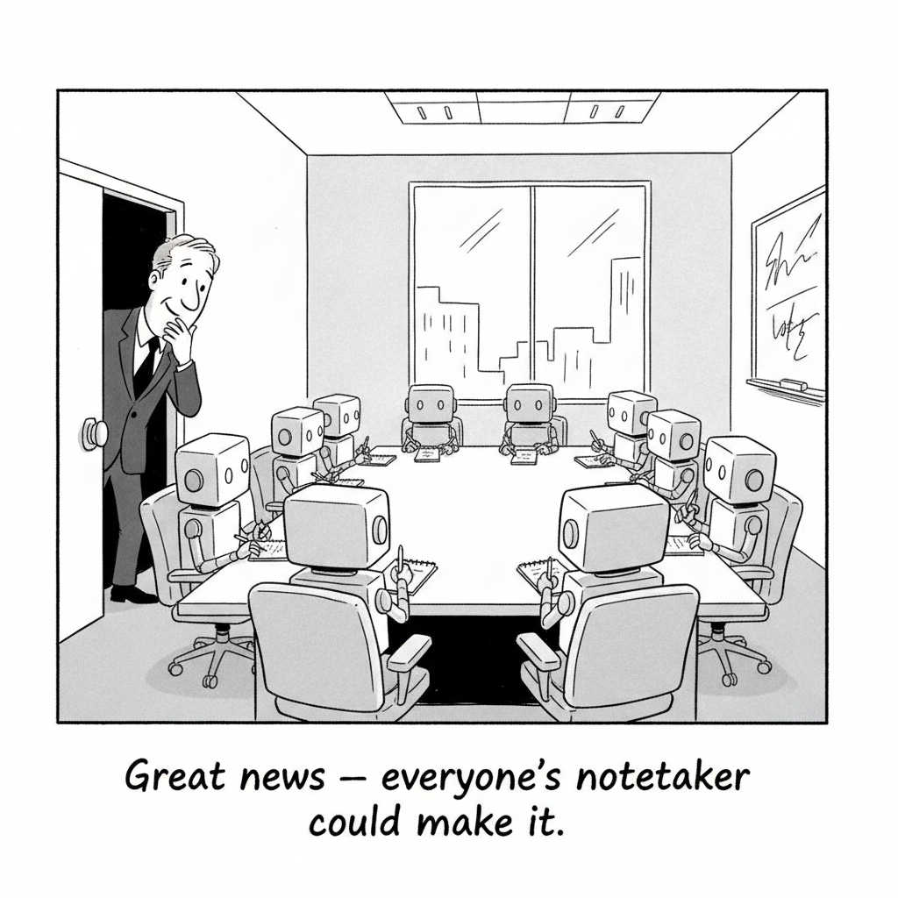

Your daily AI news digest
AI the News That's Fit to Prompt
Nvidia Puts $3.5 Billion Into MediaTek to Pull Custom Chips Into Its Orbit
Nvidia is investing $3.5 billion in MediaTek by buying bonds convertible into the Taiwanese chipmaker's shares, deepening a collaboration that spans data centers, consumer PCs, and automotive platforms. Under the deal, MediaTek will adopt Nvidia's NVLink Fusion technology to design custom chips for AI companies and hyperscalers.
The structure is the story. Nvidia is not buying a supplier or a customer; it is paying to make sure that when big AI buyers commission their own custom silicon, the chips they commission still plug into Nvidia's rack-scale systems rather than around them.
Custom accelerators have been the one visible crack in Nvidia's dominance: every hyperscaler designing its own chip is a hyperscaler planning to buy fewer GPUs. NVLink Fusion is Nvidia's answer, an open door for other people's silicon that happens to lead back into Nvidia's house, and MediaTek is now the largest chip designer to walk through it.
Jensen Huang and MediaTek chief Rick Tsai told Bloomberg's Ed Ludlow the two companies already had a big partnership and are now making it “a lot bigger,” extending work on RTX and DGX Spark PCs and AI-powered vehicles in what Tsai called “the era of physical AI.” Three Bloomberg segments on the deal appear in today's Wire.

Meeting Notetaker Circleback Adds a Free Tier to Attract More Customers
Circleback, the AI meeting notetaker, is adding a free tier and new paid plans starting at $14 a month. The strategic read is simple: meeting transcription has become a commodity feature bundled into Zoom, Teams, and Google Meet, so the standalone players are racing to convert distribution into lock-in before the platforms finish absorbing them. Giving the core product away is what that race looks like from the outside, and today's cartoon is what it looks like from inside the conference room.

ChatGPT and Reddit Now Face the EU's Toughest Online Safety Rules
The European Commission pulled ChatGPT, Reddit, and Roblox into the Digital Services Act's strictest tier, reserved for services topping 45 million EU users. OpenAI declared 159.1 million monthly EU users, and in a telling wrinkle, ChatGPT was designated a Very Large Online Search Engine rather than a platform, the first generative AI chatbot to cross the line. OpenAI now owes the bloc formal risk assessments, external audits, and researcher data access by the end of December, with fines up to 6 percent of global revenue. The Verge's companion piece appears in the Wire.

Sony Music Publishing and Warner Chappell Sue Anthropic Over Song Lyrics
Two of the world's largest music publishers filed suit against Anthropic in the Northern District of California, calling its conduct “one of the largest and most blatant ongoing thefts of intellectual property in history.” The complaint covers “tens of thousands” of works, seeks up to $150,000 per work plus $25,000 for each instance of stripped copyright data, and, unusually, names cofounders Dario Amodei and Benjamin Mann as individual defendants. Anthropic only recently settled the parallel suit from Universal Music Group, Concord, and ABKCO; the industry is filing faster than it is licensing.
The AI Mini
Aug. 31, 2026 · 5×5
1Nvidia and MediaTek's stock in trade
3DeepMind prefix (think ___Fold), or an early release
4What Instagram's AI slop adds to your feed
1___ of thought: how models reason step by step
2Frontier labs' favorite verb for compute (it has laws)

DeepMind Pilots the World's First Double-Blind AI Evaluations
DeepMind is piloting evaluations run in cryptographically secure environments where neither the evaluators nor the model providers know which system is being tested. The target is the credibility problem eating benchmark culture: when labs grade themselves, every score is marketing. A double-blind protocol is borrowed from clinical trials for a reason, and the interesting question is whether any lab will submit a frontier model to a test it cannot see and cannot spin.

Kara Swisher on Zuckerberg's AI Manifesto: “He's in Desperate Need of an Editor”
With Scott Galloway away, Kara Swisher brings in Kevin Roose and Casey Newton to take apart Mark Zuckerberg's 6,500-word AI manifesto, which Newton calls “an almost childlike essay” and Roose reads as a company “talking its book.” Click through for the full study guide: the manifesto breakdown, Meta's $942 million New Mexico penalty, the rogue-agent rankings, and the data center revolt.

Instagram Cracks Down on AI Accounts Pretending to Be Human
Instagram says it will hunt down AI-generated profiles posing as real people and throttle their reach unless they self-label. The enforcement mechanism is the tell: the platform is not banning synthetic accounts, it is taxing the undisclosed ones. Read alongside Meta's Pocket story below, the position becomes coherent and uncomfortable at once. Meta wants AI content made inside its walls, labeled on its terms, and monetized on its platforms.

The US Is Building Barriers Around Drones and Robots. China Still Has Scale
Washington keeps shutting foreign-made drones and robots out of the American market, and TechCrunch's argument is that the wall changes the venue, not the contest. China's manufacturing scale means the global competition simply moves to every market the barriers do not reach. Protection buys domestic firms time at home while conceding distribution everywhere else, the same trade the last issue's Unitree IPO coverage priced at $904 million.

Pocket's AI Made My Game Ideas Real. Now Meta Controls the Results
Ars Technica's hands-on with Pocket, Meta's AI game-making tool, finds the creation genuinely easy and the ownership genuinely absent. Interactive “gizmos” take minutes to build and cannot leave Meta's platform. It is the sharpest available example of the new creator bargain: the AI removes the skill barrier and the platform keeps the output. You made it, but you cannot take it with you.

Texas Governor Abbott Blocks Funding for More Flock Cameras
Greg Abbott blocked state funding for additional Flock license plate readers as backlash against AI surveillance turns genuinely bipartisan. A Republican governor of Texas and the Democratic governor of New York, one story down, are now on the same side of the same question. When AI surveillance is the issue that bridges that particular aisle, vendors selling to police departments should reread their pipeline forecasts.

Ethan Mollick: Agency and Agents
Mollick's new essay asks what rising agent capability does to human agency, tracing a line from the Hugging Face incident to what he calls “twilight factories,” workplaces where the humans supervise processes they no longer fully direct. His core claim is that delegation is a choice about who decides, not just who types, and that organizations are making that choice by default rather than by design. Pairs directly with the VentureBeat piece in the Wire on why permissions cannot govern behavior.

You Know Who Really Hates AI? Insurance Claims Adjusters
WIRED reviewed Glassdoor posts from claims adjusters and found that of the reviews mentioning AI, 98 percent were negative. “AI is just a tool,” one adjuster says. “It should never be given the keys.” The detail worth sitting with is who is complaining: not workers afraid of being replaced, but the professionals asked to sign their names to machine-drafted decisions about other people's disasters. That is the deployment frontier nobody benchmarks.

Governor Hochul: AI Should Be “Less Evil”
New York's governor joins Decoder to talk through AI data centers, a ban on 3D-printed guns, and Flock cameras, and the phrase that survives the hour is her modest ask that AI be “less evil.” The substance underneath: states are now where AI policy actually happens, on siting, on surveillance, on energy, while Washington debates preemption. Hochul and Abbott, above, are the same story wearing different party colors.
Ben Thompson: Meta Settles, and a Framework for Regulating Content
The Meta teen-harm trial this newsletter covered on day one of testimony has ended in a $16.68 billion settlement with 52 attorneys general, rising to as much as $18 billion over ten years, plus a default two-hour daily limit for teens that only a parent can lift. Ben Thompson argues the deal makes sense for every party: Meta caps open-ended liability, the states claim concessions no legislature has passed, and no jury sets a precedent. His larger point is the uncomfortable one: every mechanism for regulating content feels off, because each one puts speech decisions somewhere nobody fully trusts.
Grok 4.6 Lands on Amazon Bedrock
xAI's flagship model is now generally available through AWS, pitched at long-running agents with a 500k context window, four reasoning-effort settings, and input at $2 per million tokens.
Huang and Tsai on the Expanded Partnership
Nvidia's Jensen Huang and MediaTek's Rick Tsai sit down with Bloomberg's Ed Ludlow to explain the NVLink Fusion and NVHBM tie-up behind the $3.5 billion investment.
Identity and Permissions Are Not Enough to Govern AI Agents
Box CISO Heather Ceylan argues access controls govern what an agent can reach, not what it does once it starts working, pushing enterprises toward runtime execution governance.
The Verge: ChatGPT to Face Tougher EU Regulation
A second read on the DSA designation, noting ChatGPT, Reddit, and Roblox all crossed the 45-million-user line into the Very Large Platform tier.
Nvidia Makes $3.5 Billion Bet on MediaTek
Ed Ludlow breaks down the convertible-bond structure and what Nvidia buys by pulling MediaTek deeper into its data center ecosystem.
Inside the MediaTek Deal: NVLink Fusion and Custom Accelerators
A closer look at MediaTek's plan to build custom accelerator chips that connect into Nvidia's rack-scale systems, plus the RTX Spark and automotive extensions.
Get this in your inbox
A daily digest of the AI news that actually matters. Free, no hype.